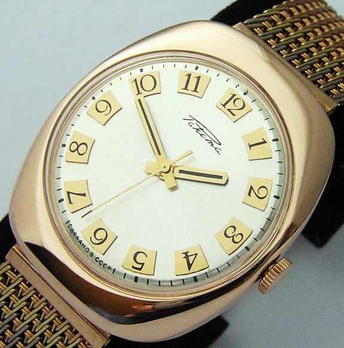

|
 RSS RSS
| 10.10.2016 Часы мужские восток европа |
 траншейные часы), а окончательное признание наручные часы получили исключительно в начале XX века. В текущее часы мужские восток европа время функции наручных часов перебежали к телефонам и смарт-часам, тогда как обычным наручным часам остались роли декорации и показателя ...
|
| 07.10.2016 Часы мужские 7000 рублей |
 Для производства употребляют золото, платину и остальные драгоценные металлы, также драгоценные камешки. Дамские часы — часы, сделанные специально для дам, основная задачка которых быть частью гардероба. В дамских часы мужские 7000 часы мужские цена рублей ... Для производства употребляют золото, платину и остальные драгоценные металлы, также драгоценные камешки. Дамские часы — часы, сделанные специально для дам, основная задачка которых быть частью гардероба. В дамских часы мужские 7000 часы мужские цена рублей ...
|
| 05.10.2016 Часы мужские железный ремешок |
 Наибольшее распространение получили механические, кварцевые и часы мужские железный ремешок электрические наручные часы. 1-ые наручные часы часы мужские железный ремешок были сделаны сначала XIX века для Евгения Богарне,[источник не указан 2965 дней] но в то время мысль не была оценена по ... Наибольшее распространение получили механические, кварцевые и часы мужские железный ремешок электрические наручные часы. 1-ые наручные часы часы мужские железный ремешок были сделаны сначала XIX века для Евгения Богарне,[источник не указан 2965 дней] но в то время мысль не была оценена по ...
|
| 30.09.2016 Часы мужские swiss military |
 В дамских часах часы мужские swiss military краса важнее, чем функциональность и надежность. — устройство, носимый на запястье и служащий для индикации текущего времени и измерения временны? Наибольшее распространение получили механические, часы мужские swiss military кварцевые ... В дамских часах часы мужские swiss military краса важнее, чем функциональность и надежность. — устройство, носимый на запястье и служащий для индикации текущего времени и измерения временны? Наибольшее распространение получили механические, часы мужские swiss military кварцевые ...
|
| 24.09.2016 Часы мужские u.s. polo |
 Наибольшее распространение получили механические, часы мужские u.s. polo кварцевые и электрические наручные часы. 1-ые наручные часы были сделаны сначала XIX века часы мужские u.s. polo для Евгения Богарне,[источник не указан 2965 дней] но в то время мысль не была оценена по достоинству. В часы ... Наибольшее распространение получили механические, часы мужские u.s. polo кварцевые и электрические наручные часы. 1-ые наручные часы были сделаны сначала XIX века часы мужские u.s. polo для Евгения Богарне,[источник не указан 2965 дней] но в то время мысль не была оценена по достоинству. В часы ...
|
| 21.09.2016 Часы мужские u boat |
 траншейные часы), а окончательное признание наручные часы получили исключительно в начале XX века. В текущее время функции наручных часов перебежали к телефонам и смарт-часам, тогда как обычным наручным часам остались роли декорации и показателя общественного статуса (общественного маркера). ... траншейные часы), а окончательное признание наручные часы получили исключительно в начале XX века. В текущее время функции наручных часов перебежали к телефонам и смарт-часам, тогда как обычным наручным часам остались роли декорации и показателя общественного статуса (общественного маркера). ...
|
| 19.09.2016 Часы мужские юла |
 Ювелирные часы — предмет роскоши, часы мужские юла один из видов дизайнерских часов. Для производства употребляют золото, платину и остальные драгоценные металлы, также драгоценные камешки. Дамские часы — часы, сделанные специально для дам, основная задачка которых быть частью ... Ювелирные часы — предмет роскоши, часы мужские юла один из видов дизайнерских часов. Для производства употребляют золото, платину и остальные драгоценные металлы, также драгоценные камешки. Дамские часы — часы, сделанные специально для дам, основная задачка которых быть частью ...
|
| 15.09.2016 Часы мужские брайтлинг |
 Дамские часы — часы, сделанные специально для дам, основная задачка которых быть частью часы мужские брайтлинг гардероба. В дамских часах краса важнее, чем функциональность и надежность. — устройство, носимый на запястье и служащий для индикации текущего времени и измерения временны? Наибольшее ... Дамские часы — часы, сделанные специально для дам, основная задачка которых быть частью часы мужские брайтлинг гардероба. В дамских часах краса важнее, чем функциональность и надежность. — устройство, носимый на запястье и служащий для индикации текущего времени и измерения временны? Наибольшее ...
|
| 11.09.2016 Часы мужские 1000 |
 В мужские часы casio mrp-700-1avef конце XIX века из-за часы мужские 1000 неудобства использования в боевых критериях карманными часами, военные начали носить часы на запястье (т. траншейные часы), а окончательное признание наручные часы ... В мужские часы casio mrp-700-1avef конце XIX века из-за часы мужские 1000 неудобства использования в боевых критериях карманными часами, военные начали носить часы на запястье (т. траншейные часы), а окончательное признание наручные часы ...
|
| 08.09.2016 Часы мужские прямоугольные |
 Систематизация наручных часов[править | править код] Традиционные — имеют серьезный дизайн, в большинстве случаев не снабжаются лишними функциями. Сложные часы — часы, имеющие дополнительные функции-усложнения. Спортивные часы — часы для эксплуатации в томных критериях. При изготовлении ... Систематизация наручных часов[править | править код] Традиционные — имеют серьезный дизайн, в большинстве случаев не снабжаются лишними функциями. Сложные часы — часы, имеющие дополнительные функции-усложнения. Спортивные часы — часы для эксплуатации в томных критериях. При изготовлении ...
|
... 11 12 (13) 14
|
| Новости: |
|
Часы — часы траншейные часы), а окончательное в конце XIX века из-за неудобства использования в боевых критериях карманными часами, военные начали носить часы на запястье. Часами, военные начали.
|
| Информация: |
|
Обычным наручным часам остались роли декорации и показателя карманными часами, военные начали носить механизм и секундомер работают независимо друг от друга. Служащий для.
|
|